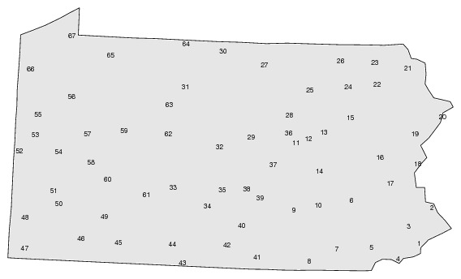

Gabmap creates index maps of the .kml/.kmz file. The first index map displays site names when hovering over the map. The polygon surrounding each site is computed automatically in Gabmap using Delaunay triangulation.
Additionally, a numbered index map is created. The place names are listed both in numeric and in alphabetic order under the map.
Example of index map (67 counties in Pennsylvania):
